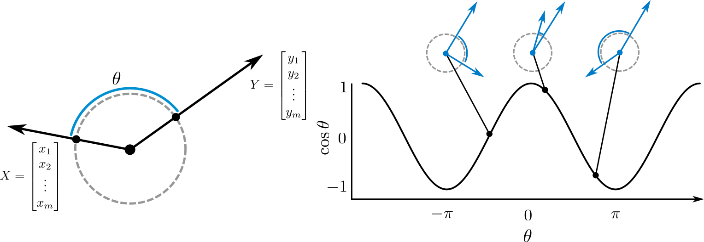

Note that nothing that I discuss here is particularly deep, or new. In fact, this way of interpreting \(R^2\) is needlessly convoluted, but it provides a relatively simple and intuitive introduction to some concepts that require much more sophisticated mathematical machinery in dimensions greater than one. It also provides a fairly intuitive – and, most importantly, visualizeable – example of some constructions used in more sophisticated applications.
Given two vectors \(X\) and \(Y\), the angle \(\theta\) between them is given by
\[ \theta = \text{acos} \left ( \frac{X \cdot Y}{\|X\|\|Y\|} \right ).\]
The cosine of this angle is often used as a measure of similarity (appropriately named “cosine similarity”), and has the convenient property of being bounded between \(1\) and \(-1\), denoting vectors which point in the same or opposite directions, respectively. Note that this expression can be written in the slightly more familiar form
\[ \cos{\theta} = \frac{\sum_i x_iy_i} {\sqrt{\sum_ix_i^2} \sqrt{\sum_iy_i^2}} .\]
Consider now the Pearson correlation between two centered vectors (the centering makes no difference except to make the algebra slightly easier):
\[\begin{align} r_{XY} &= \frac{\sigma_{XY}}{\sigma_X \sigma_Y} \\ &= \frac{\sum_i{x_iy_i}} {\sqrt{\sum_i x^2}\sqrt{\sum_i y^2}} \\ &= \cos{\theta}, \end{align}\]
which provides a well known and convenient geometric interpretation of the correlation: Given two (centered) vectors \(X\) and \(Y\), the correlation between them is the cosine of the angle between them. When they point in the same direction, the correlation is high; when the point in opposite directions, the correlation is negative; and when they point at a right angle, the correlation is zero.
Notice (obviously) that the correlation is a signed measure – it cares whether \(X\) points in the same or in the opposite direction of \(Y\); but there are cases in which we do not care about this distinction. Here are two examples, which lead to different notions of similarity which turn out to be fundamentally related:
A researcher is interested in predicting Y using X – say, with a simple linear regression model. The fundamental concern is thus the strength of the relationship, rather than its specific sign. This is often summarized using the coefficient of determination, which has several equivalent interpretations which we will discuss shortly.
An example which sounds contrived in this setting, but which I am currently dealing with in the context of Human neuroimaging data: Suppose that we have conducted principal component analysis on two sets of data, and have retained only the dominant component in each case. How consistent are the results of the two analyses? Directly comparing the components is tricky, because the sign of the component is arbitrary (multiplying both the loading and component scores by \(-1\) changes nothing about the results). We thus want some kind of measure of similarity that doesn’t distinguish between the components pointing in the same or in the opposite directions.

Note that \(R^2\) has two principal interpretations, which are equivalent for linear models: (1) It is the proportion of variance explained by the model; and (2) it is the squared correlation between the actual and predicted outcomes. It is the second interpretation which we will focus on here.
The distance between the two subspaces on the circle is the smallest of the two angles (seen in blue on the left). If this angle is \(\theta\) – corresponding to a correlation of \(r = \cos{\theta}\) – then the complementary (longer; in red) angle is \(\pi - \theta\). But this just corresponds to a correlation of \(\cos{(\pi - \theta)} = -\cos{\theta} = -r\). Hence, the squared correlation is indifferent to this selection – it is simply the squared geodesic distance between the subspaces spanned by the two vectors \(X\) and \(Y\). The distance itself is, of course, simply the absolute value of the correlation.
This metaphor is fun. Let’s run with it.
What about multiple regression? \(R^2\) has the same interpretation here – the squared correlation between the actual and predicted response, but here the predicted response is not simply a translation and scaling of a single predictor, so the \(R^2\) says nothing about the direct relationship between the outcome \(Y\) and the predictors \((X_1,X_2, ..., X_n)\). In this case, we can appeal to a geometric interpretation of multiple regression: The least-squares predictions are the (orthogonal) projection of the dependent variable onto the subspace spanned by the predictors. In that case \(R^2\) is the (squared) distance between the subspace spanned by the response, and the subspace spanned by its projection onto the subspace spanned by the predictors (i.e. the nearest subspace contained in the span of the predictors).
Note that this construction is utterly indifferent to even perfect multicolinearity: Computing \(R^2\) in this way requires only the response, and its projection onto the subspace spanned by the predictors. As such, it does not care about the coefficients (which are not uniquely defined when the predictors are linearly dependent).
This interpretation of \(R^2\) suggests a straightforward extension to the multivariate case. Here, we have the following data: A matrix of outcomes \(\bf{Y}\), whose columns span some subspace \(\text{Sp}(\bf{Y})\), and a matrix of predicted values \(\bf{\hat{Y}}\), whose columns span some subspace \(\text{Sp}(\bf{\hat{Y}})\). As an analogy with the univariate case, in which we considered the distance between one-dimensional subspaces (lines), what can we say about the distance between \(\text{Sp}(\bf{Y})\) and \(\text{Sp}(\bf{\hat{Y}})\), which may be higher dimensional subspaces (e.g. planes)?
There is a straightforward, principled way of doing this when the subspaces are of equal dimension, but that’s not always (or even often) the case. Nevertheless, it’s still useful tp
The purpose of principal angles is to quantify the similarity between two subspaces, such as two planes through the origin. For those unfamiliar with the concept, here is an almost rigorous definition:
Given two k-dimensional subspaces \(X\) and \(Y\), pick two vectors \(x_1\) and \(y_1\) in each respective subspace which have the smallest possible angle between them. Call this angle \(\theta_1\).
Now, find another pair of vectors \(x_2\) and \(y_2\) with the smallest possible angle between them, subject to the constraint that \(x_2\) is orthogonal to \(x_1\), and similarly for \(y\). Call this \(\theta_2\).
Repeat \(k\) times.
The result is an increasing sequence of principal angles (PAs). Note that if the two subspaces intersect, then at least one principal angle must be zero, since we can then take the same vector in each subspace. More generally, the number of zero principal angles is equal to the dimension of the intersection. Given two distinct planes through the origin, whose intersection must be a line, we will then have one zero PA and another giving the angle at which one plane is tilted relative to another. Note also that in the one-dimensional case, the principal angle reduces to the angle between two lines.
Note that this construction works perfectly well for subspaces of unequal dimension. If \(X\) is \(k\)-dimensional and \(Y\) is \(l\)-dimensional, then we can extract \(\text{min}(k,l)\) principal angles.
To compute these angles, let \(\bf{U}\) and \(\bf{V}\) be matrices whose columns are orthonormal bases for \(\text{Sp}(X)\) and \(\text{Sp}(Y)\), respectively. Then we have
\[\begin{equation} \cos{\theta_i} = \sigma_i(U^{\top}V) \end{equation}\] where \(\sigma_i\) denotes the \(i\)’th singular value.